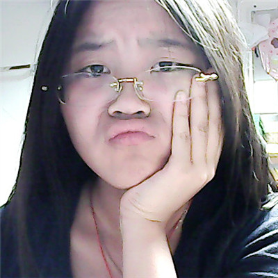

Hello,
Name: Anpin
School: USC

Major: Computer Engineering & Computer Science Minor Accounting
Expect Graduation Date: May 2015.
Hobbies: Playing Sudoku and Making origami handicrafts
Love: Japanese Anime, my cat Popcorn and Lots of dresses
Nice to Meet You! I'm Anpin, a day-dreaming girl with 'unexpected' ideas
Want to know about me?
Go ahead with the website
About Me
Porfolio Works
Glass Factory
Software Design
KittenCell Factory
Artwork /GUI Design
GoHoney Game
Qt Game Development
Origami
Handicrafts made by Papers
Technical Decistions
I chose to have a sidebar instead of a top navbar in order to have a navbar available at all time. Making the top bar fixed at the top covers some of the web page content which I do not like that. The sidebar can be hidden when the width gets narrower
Put all JavaScript/JQuery links at the bottom of the html file in order to boost the webpage's loading speed.
Neat design and avoid too much inline css styles.
The theme color I believe is purple and all my background images are edited to be covered with a little bit purple shades
<
Why Do I Want to be a Front-end Engineer
● I love to surf beautiful webpages
● It is like creating a masterpiece even though I am not an artist
● People now tend to shop online, good front-end makes them happy
● I am so willing to spend lots of time perfecting a good-looking page
● This work includes art, psycology and excellent code skills
● My mom can finally understand what I'm doing:)